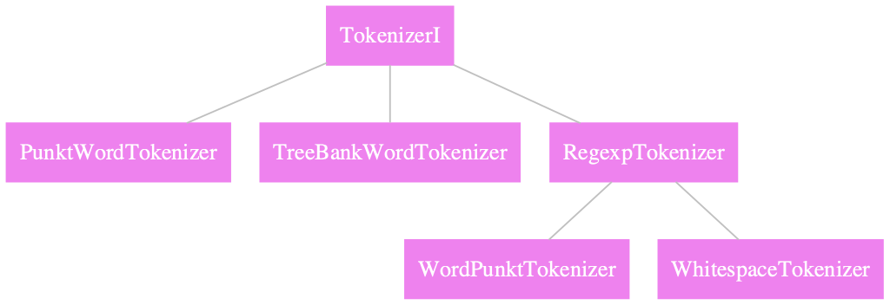

Text Tokenization#
The objective of text tokenization is to break the text into smaller units which are often more linguistically meaningful.
These smaller linguistic units are usually easier to deal with computationally and semantically.
import nltk
from nltk.tokenize import sent_tokenize
## Colab Only
## nltk download
nltk.download('punkt')
[nltk_data] Downloading package punkt to /root/nltk_data...
[nltk_data] Unzipping tokenizers/punkt.zip.
True
Sentence Tokenization#
para = '''There was nothing so very remarkable in that; nor did Alice think it so very much out of the way to hear the Rabbit say to itself, “Oh dear! Oh dear! I shall be late!” (when she thought it over afterwards, it occurred to her that she ought to have wondered at this, but at the time it all seemed quite natural); but when the Rabbit actually took a watch out of its waistcoat-pocket, and looked at it, and then hurried on, Alice started to her feet, for it flashed across her mind that she had never before seen a rabbit with either a waistcoat-pocket, or a watch to take out of it, and burning with curiosity, she ran across the field after it, and fortunately was just in time to see it pop down a large rabbit-hole under the hedge.'''
for s in sent_tokenize(para):
print(s+'\n')
There was nothing so very remarkable in that; nor did Alice think it so very much out of the way to hear the Rabbit say to itself, “Oh dear!
Oh dear!
I shall be late!” (when she thought it over afterwards, it occurred to her that she ought to have wondered at this, but at the time it all seemed quite natural); but when the Rabbit actually took a watch out of its waistcoat-pocket, and looked at it, and then hurried on, Alice started to her feet, for it flashed across her mind that she had never before seen a rabbit with either a waistcoat-pocket, or a watch to take out of it, and burning with curiosity, she ran across the field after it, and fortunately was just in time to see it pop down a large rabbit-hole under the hedge.
The
sent_tokenize()function uses an instance ofPunktSentenceTokenizerfrom thentlk.tokenize.punktmodule.To process large amount of data, it is recommended to load the pre-trained
PunktSentenceTokenizeronce, and call itstokenizer()method for the task.
import nltk.data
tokenizer = nltk.data.load('tokenizers/punkt/PY3/english.pickle')
tokenizer.tokenize(para)
['There was nothing so very remarkable in that; nor did Alice think it so very much out of the way to hear the Rabbit say to itself, “Oh dear!',
'Oh dear!',
'I shall be late!” (when she thought it over afterwards, it occurred to her that she ought to have wondered at this, but at the time it all seemed quite natural); but when the Rabbit actually took a watch out of its waistcoat-pocket, and looked at it, and then hurried on, Alice started to her feet, for it flashed across her mind that she had never before seen a rabbit with either a waistcoat-pocket, or a watch to take out of it, and burning with curiosity, she ran across the field after it, and fortunately was just in time to see it pop down a large rabbit-hole under the hedge.']
The nltk also provides many pre-trained PunktSentenceTokenizer for other European languages.
!ls /Users/Alvinchen/nltk_data/tokenizers/punkt/PY3
# !dir C:/Users/alvinchen/AppData/Roaming/nltk_data/tokenziers/punkt/PY3
ls: cannot access '/Users/Alvinchen/nltk_data/tokenizers/punkt/PY3': No such file or directory
Word Tokenization#
Similarly, the word_tokenize() function is a wrapper function that calls the tokenize() method on a instance of TreebankWordTokenizer class.
from nltk.tokenize import word_tokenize
print(word_tokenize(para)[:20])
['There', 'was', 'nothing', 'so', 'very', 'remarkable', 'in', 'that', ';', 'nor', 'did', 'Alice', 'think', 'it', 'so', 'very', 'much', 'out', 'of', 'the']
To process large amount of data, please create an instance of
TreebankWordTokenizerand call itstokenize()method for more efficient processing.We will get the same results with the following codes as above.
from nltk.tokenize import TreebankWordTokenizer
tokenizer = TreebankWordTokenizer()
print(tokenizer.tokenize(para)[:10])
['There', 'was', 'nothing', 'so', 'very', 'remarkable', 'in', 'that', ';', 'nor']
The nltk module has implemented other more task-oriented word tokenizers, which differ in terms of their specific handling of the punctuations and contractions.

Comparing different word tokenizers#
TreebankWordTokenizerfollows the Penn Treebank conventions for word tokenization.WordPunctTokenizersplits all punctuations into separate tokens.
from nltk.tokenize import WordPunctTokenizer
wpt = WordPunctTokenizer()
tbwt = TreebankWordTokenizer()
sent = "Isn't this great? I can't tell!"
wpt.tokenize(sent)
['Isn', "'", 't', 'this', 'great', '?', 'I', 'can', "'", 't', 'tell', '!']
tbwt.tokenize(sent)
['Is', "n't", 'this', 'great', '?', 'I', 'ca', "n't", 'tell', '!']
Tokenization using regular expressions#
The nltk also provides another flexible way for text tokenization based on regular expression.
The RegexTokenizer class allows for text tokenization based on the self-defined regular expression patterns.
The regular expression can be created/defined for either the token or the delimiter.
from nltk.tokenize import RegexpTokenizer
retok1 = RegexpTokenizer(pattern= "[a-zA-Z_'-]+")
retok2 = RegexpTokenizer(pattern= "[a-zA-Z_-]+")
retok3 = RegexpTokenizer(pattern= "\s+", gaps=True)
print(retok1.tokenize(sent))
["Isn't", 'this', 'great', 'I', "can't", 'tell']
See how this tokenizer deals with the apostrophe?
print(retok2.tokenize(sent))
['Isn', 't', 'this', 'great', 'I', 'can', 't', 'tell']
print(retok3.tokenize(sent))
["Isn't", 'this', 'great?', 'I', "can't", 'tell!']
References#
NLTK Book, Ch 1-3